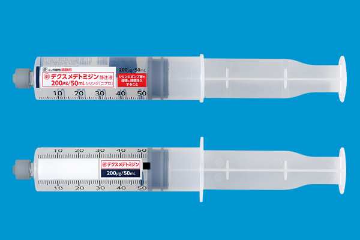
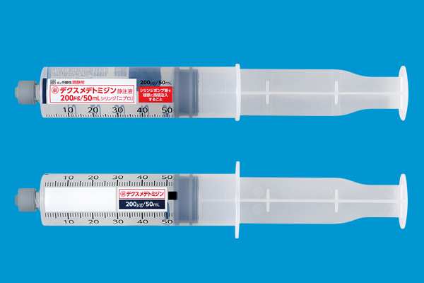

鎮静薬の種類と特性
小児科病棟で使用する薬剤を中心に
髙林学
2024年9月27日
本日の内容
- 鎮静薬の歴史
- 鎮静薬の分類
- それぞれの薬剤の特徴
- 全国での使用状況
- 熊大での使用状況
鎮静薬の歴史
鎮静薬の歴史


 

- １９世紀前
- 紀元前から、ヒヨスやアヘンなどの植物由来の鎮静作用のある物質が使われていた。
- １８０５年 モルヒネがアヘンから分離され、鎮静催眠薬として精神医学に導入された。
- １９世紀
- １８３２年 最初の合成鎮静剤である抱水クロラールが合成
- ２０世紀前半
- １９０３年 バルビタールが合成され、バルビツール酸系鎮静剤の幕開け
- １９１２年 フェノバルビタールが利用可能
- ２０世紀後半以降
- １９５５年 ベンゾジアゼピン系薬が開発され、主要な鎮静剤として使用
- １９８６年 プロポフォールが発売 より制御しやすい短時間作用型の鎮静薬が開発され、静脈麻酔薬として普及
- １９９９年 デクスメデトミジン発売開始
催眠・鎮静薬の分類
アルコール
アルデヒド
- エーテル
- トリクロホスナトリウム
- 抱水クロラール
バルビツール酸系
- フェノバルビタール
- ペントバルビタール
- チアミラール
α２作動薬
- デクスメデトミジン
- クロニジン
抗ヒスタミン薬
- ヒドロキシジン
- ジフェンヒドラミン
- d-クロルフェニラミン
ベンゾジアゼピン系
- ジアゼパム
- ミダゾラム
- ニトラゼパム
- フルニトラゼパム
その他
- プロポフォール
- チアミラール
アルコール・アルデヒド
アルコール・アルデヒド
トリクロリールシロップ
エスクレ坐剤
エスクレ注腸用キット
- 作用機序
- 体内でトリクロロエタノールに代謝され、GABA受容体に作用し中枢神経抑制作用を示す
- 利点
- 静脈経路が必要ない
- 小児科領域では広く使われている薬剤であり、馴染みがある
- オレンジの香りで、小児でも飲みやすい
- 欠点
- 効果発現が遅く（30~60分）、作用持続時間も長い（2~8時間）
- 鎮痛作用はない
- 坐剤にはゼラチンが含まれるためアレルギーに注意
小児科領域では古い薬が使われる傾向にある